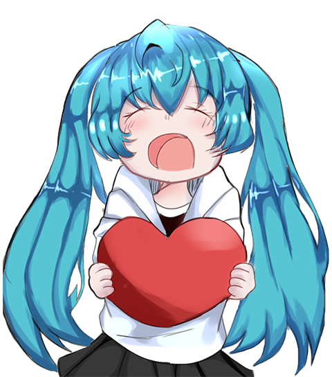

Happy Birthday My Lovely
Selamat , selamat ulang tahun sebenarnya aku ragu sih kamu mau
nggak ku rayain ulang tahun nya kek gini wkwkwk.
Gpp kok
Aku nggak suka kalo ultah nya dirayain
Semoga kamu selalu dalam kondisi yang baik dan dipermudahkan segala urusannya, selamat
beraktifitas

It starts with one thing I don't know why It doesn't even matter how hard you try Keep
that in mind I designed this rhyme To explain in due time All I know Time is a valuable thing Watch it fly
by as the pendulum swings Watch it count down to the end of the day The clock ticks life away It's so unreal
Didn't look out below Watch the time go right out the window Trying to hold on, but you didn't even know
Wasted it all just to watch you go I kept everything inside And even though I tried, it all fell apart What
it meant to me Will eventually be a memory of a time when I tried so hard And got so far But in the end It
doesn't even matter I had to fall To lose it all But in the end It doesn't even matter One thing, I don't
know why It doesn't even matter how hard you try Keep that in mind I designed this rhyme To remind myself of
a time when I tried so hard In spite of the way you were mocking me Acting like I was part of your property
Remembering all the times you fought with me I'm surprised it got so Things aren't the way they were before
You wouldn't even recognize me anymore Not that you knew me back then But it all comes back to me in the end
You kept everything inside And even though I tried, it all fell apart What it meant to me will eventually be
a memory of a time when I tried so hard And got so far But in the end It doesn't even matter I had to fall
To lose it all But in the end It doesn't even matter I've put my trust in you Pushed as far as I can go For
all this There's only one thing you should know I've put my trust in you Pushed as far as I can go For all
this There's only one thing you should know I tried so hard And got so far But in the end It doesn't even
matter I had to fall To lose it all But in the end It doesn't even matter I need you You love me Please come
back and please don't walk Asking girl to free me I need you You love me Please come back and please don't
walk Asking girl to free me I know why you're gone I know why you leaving Scars that can't be heal Open
still and bleeding Put you in a sneer I never get out of What you seen in me I'll never be free from On the
edge don't fucking crazy Fucking stupid and I'm lazy Baby save me from myself Fuck my fate, is fucking
stupid Fucking hate this life and music Baby save me from this hell I need you You love me Please come back
and please don't walk Asking girl to free me I need you You love me Please come back and please don't walk
Asking girl to free me I always needed something but no matter what I got I always needed more but then I
never had enough Rollin' one off Down with the pain There is no stop to the ink in my brain I need you You
love me Please come back and please don't walk Asking girl to free me I need you You love me Please come
back and please don't walk Asking girl to free meI'm feelin' lost and I don't know where else to go now I
don't really have a place to call my home now Everybody hatin' and I feel so cold now Why do everybody make
me feel alone like? I'm feelin' lost and I don't know where else to go now I don't really have a place to
call my home now Everybody hatin' and I feel so cold now Why do everybody make me feel alone like? I've got
so much shit to say Baby take me from this place I just really cannot stay Tears are falling down my face I
feel colder every day Know they want me out their way I'll be gone, I'll be okay I just need some fucking
space I walk by, I feel them hate Wanna die 'cause I relate Wanna cry, I feel insane I get high but I can't
escape Would they love me If I change? Am I lost? Am I too late? Soon I'm dead, I cannot wait Please don't
love me, it's a waste I'm feelin' lost and I don't know where else to go now I don't really have a place to
call my home now Everybody hatin' and I feel so cold now Why do everybody make me feel alone like? I'm
feelin' lost and I don't know where else to go now I don't really have a place to call my home now Everybody
hatin' and I feel so cold now Why do everybody make me feel alone like? Wanna die so fucking bad You're the
best I've ever had Wanna die when I look back 'Cause you always made me sad Can't get over shit I'm done I
just make another song Nothing helps, I'm fucking numb I'll be gone, bitch, pass the blunt I've been hurting
for so long Baby, kill me in your thoughts I've been dying all along Let me go where I belong Get me drunk
bitch, get me high Give me pills and let me vibe When it's time, just let me die I'm so tired of this life
I'm tired of being what you want me to be
Feeling so faithless, lost under the surface
I don't know what you're expecting of me
Put under the pressure of walking in your shoes
Caught in the undertow, just caught in the undertow
Every step that I take is another mistake to you
Caught in the undertow, just caught in the undertow
I've become so numb, I can't feel you there
Become so tired, so much more aware
By becoming this all I want to do
Is be more like me and be less like you
Can't you see that you're smothering me?
Holding too tightly, afraid to lose control
'Cause everything that you thought I would be
Has fallen apart right in front of you
Caught in the undertow, just caught in the undertow
Every step that I take is another mistake to you
Caught in the undertow, just caught in the undertow
And every second I waste is more than I can take!
I've become so numb, I can't feel you there
Become so tired, so much more aware
By becoming this all I want to do
Is be more like me and be less like you
And I know I may end up failing too
But I know you were just like me with someone disappointed in you
I've become so numb, I can't feel you there
Become so tired, so much more aware
By becoming this all I want to do
Is be more like me and be less like you
I've become so numb, I can't feel you there
I'm tired of being what you want me to be
I've become so numb, I can't feel you there
I'm tired of being what you want me to beWho am I? Someone that's afraid to let go, uh
You decide, if you're ever gonna, let me know (yeah)
Suicide, if you ever try to let go, uh
I'm sad and low, yeah
I'm sad and low, yeah
Who am I? Someone that's afraid to let go, uh
You decide, if you're ever gonna, let me know (yeah)
Suicide, if you ever try to let go, uh
I'm sad and low, yeah
I'm sad and low, yeah
I gave her everything
She took my heart and left me lonely
I've been broken, heart's contentious
I won't fix, I'd rather weep
I'm lost and I'm found, but
It's torture being in love
I love when you're around
But I fucking hate when you leave
Who am I? Someone that's afraid to let go, uh
You decide, if you're ever gonna, let me know (yeah)
Suicide, if you ever try to let go, uh
I'm sad and low, yeah
I'm sad and low, yeah
Who am I? Someone that's afraid to let go, uh
You decide, if you're ever gonna, let me know (yeah)
Suicide, if you ever try to let go, uh
I'm sad and low, yeah
I'm sad and low, yeah
Who am I? Someone that's afraid to let go, uh
You decide, if you're ever gonna, let me know (yeah)
Suicide, if you ever try to let go, uh
I'm sad and low, yeah
I'm sad and low, yeah
Who am I? Someone that's afraid to let go, uh
You decide, if you're ever gonna, let me know (yeah)
Suicide, if you ever try to let go, uh
I'm sad and low, yeah Just gonna stand there and watch me burn
Well that's alright, because I like the way it hurts
Just gonna stand there and hear me cry
Well that's alright, because I love the way you lie
I love the way you lie
I can't tell you what it really is
I can only tell you what it feels like
And right now there's a steel knife, in my windpipe
I can't breathe, but I still fight, while I can fight
As long as the wrong feels right, it's like I'm in flight
High off of love drunk from my hate
It's like I'm huffing paint and I love her the more I suffer
I suffocate and right before I'm about to drown
She resuscitates me, she fucking hates me
And I love it, wait
Where you going? I'm leaving you
No you ain't, come back
We're running right back, here we go again
It's so insane 'cause when it's going good, it's going great
I'm Superman, with the wind at his back, she's Lois Lane
But when it's bad, it's awful
I feel so ashamed, I snapped, who's that dude?
I don't even know his name, I laid hands on her
I'll never stoop so low again, I guess I don't know my own strength
Just gonna stand there and watch me burn
Well that's alright, because I like the way it hurts
Just gonna stand there and hear me cry
Well that's alright, because I love the way you lie
I love the way you lie
I love the way you lie
You ever love somebody so much
You can barely breathe, when you're with them, you meet
And neither one of you, even know what hit 'em
Got that warm fuzzy feeling, yeah them chills, used to get 'em
Now you're getting fucking sick, of looking at 'em
You swore you've never hit 'em, never do nothing to hurt 'em
Now you're in each other's face,
Spewing venom in your words, when you spit 'em
You push, pull each other's hair, scratch, claw, bit 'em
Throw 'em down, pin 'em, so lost in the moments, when you're in 'em
It's the rage that took over it controls you both
So they say it's best, to go your separate ways
Guess that they don't know ya 'cause today, that was yesterday
Yesterday is over, it's a different day
Sound like broken records, playin' over, but you promised her
Next time you'll show restraint
You don't get another chance
Life is no Nintendo game, but you lied again
Now you get to watch her leave
Out the window, guess that's why they call it window pane
Just gonna stand there and watch me burn
But that's alright, because I like the way it hurts
Just gonna stand there and hear me cry
But that's alright, because I love the way you lie
I love the way you lie
I love the way you lie
Now I know we said things, did things
That we didn't mean and we fall back into the same patterns
Same routine, but your temper's just as bad, as mine is
You're the same as me, when it comes to love, you're just as blinded
Baby please come back, it wasn't you
Baby it was me, maybe our relationship isn't as crazy as it seems
Maybe that's what happens When a tornado meets a volcano
All I know is I love you too much, to walk away now
Come inside, pick up your bags off the sidewalk
Don't you hear sincerity, in my voice when I talk?
Told you this is my fault, look me in the eyeball
Next time I'm pissed, I'll aim my fist at the dry wall
Next time, there will be no next time
I apologize even though I know it's lies
I'm tired of the games, I just want her back, I know I'm a liar
If she ever tries to fucking leave again
I'm a tie her to the bed and set this house on fire
Just gonna stand there and watch me burn
But that's alright, because I like the way it hurts
Just gonna stand there and hear me cry
But that's alright, because I love the way you lie
I love the way you lie
💔